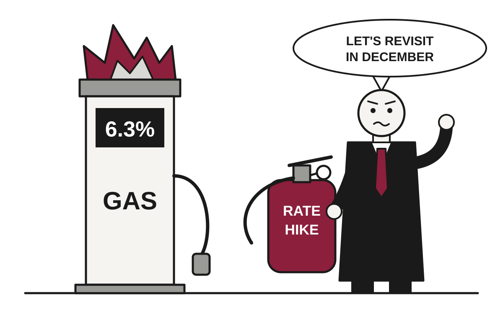

Inflation Hot Two Days Running as Fed Weighs Whether to Hike Now or Later
Consumer prices rose 3.7% and wholesale prices 6.3% in September, leaving the Federal Reserve to choose between raising rates in two weeks or merely promising to.
The wire said: Consumer prices rose 3.7% annually in September as gas prices skyrocket · CNBC Economy

Catch up
The U.S. war with Iran, launched in late February, has pushed energy prices sharply higher, and the Fed raised rates last month for the first time in more than three years. This week's data is the last major inflation evidence before its October 27-28 meeting.Why it matters
Higher gas and diesel costs are moving into other goods, and traders now expect more rate hikes, which means costlier borrowing on top of costlier fuel. Pricing implies a hike by December is close to certain, even if October is not.The Bureau of Labor Statistics reported Wednesday that the consumer price index rose 0.6% in September and 3.7% from a year earlier, according to CNBC. Economists had expected 0.6% and 3.6%, so the forecasters were right on the month and merely optimistic on the year. Inflation has exceeded the Fed's 2% goal since March 2021, a stretch long enough that the target is now more of a pen pal than a neighbor.
Gasoline did most of the damage. Prices rose 9.1% on the month, accounting for about half of the headline gain, and are up 34.2% over the year, while fuel oil is up 74.2%. Translation: the thing you put in your car and the thing some people put in their furnaces both cost far more, and the war that caused it shows no sign of ending soon.
Core CPI, which strips out food and energy because they are considered too volatile to be trusted, rose 0.3% on the month and 2.6% on the year, slightly above forecasts. Sonu Varghese of Carson Group noted that core inflation ran at a 3.7% annualized pace in September. He also said the only surprise is that investors keep getting surprised by broad-based inflation, which is the kind of observation economists make once a pattern has become hard to ignore.
Thursday brought the producer price index, a measure of what businesses pay at the wholesale level, which is essentially the consumer price index before the shop adds its own opinion. It rose 1.3% on the month and 6.3% on the year, the largest monthly gain since March 2022 and the largest annual gain since December 2022. Economists had forecast 0.6% and 5.5%. The BLS said almost half of the increase in processed goods for immediate demand was tied to diesel, which suggests the cost of moving things is now becoming the cost of the things.
The usual defense is that energy shocks are temporary and central banks look through them. Fed officials fear that the longer the war lasts, the more likely the spike becomes embedded in what consumers and businesses expect. Chairman Kevin Warsh has suggested that one test for not hiking is confidence that inflation will return to 2% in a timely manner. Mizuho's Alex Pelle wrote that the picture is not benign, with inflation elevated and intensifying.
Retail sales rose 0.8% in September, above the 0.4% forecast, but excluding autos and gas stations the gain was about 0.25%, down from around 1.1% the month before. In plain terms, consumers are spending more at the pump and tightening the belt elsewhere. CNBC also reported that the Fed's Beige Book, its summary of economic conditions, had a record number of inflation-related mentions, according to Bespoke Investment Group.
Markets are split on timing. CNBC reported odds of an October hike at about 54% after the CPI, then nearly 34% and 29% in separate Thursday readings, depending on the report and moment. All agree a hike by year-end is very likely, at roughly 90% or higher. Several Fed officials have said there is no need to hurry, though most expect another increase this year. Seven Wall Street estimates put September core PCE, the Fed's preferred gauge, at 0.32%, which would lift the annual rate to 3.1%.
Meanwhile, the 10-year Treasury yield sits at 5.19% and Brent crude at $126.55, according to the latest data. The midterm elections are approaching, which adds the usual political interest in a number that voters have already measured at the gas station. The Fed's choice is whether to hike now, or to hike later with more explanation.
Satire based on reporting by CNBC Economy. Read the originals for the straight version.